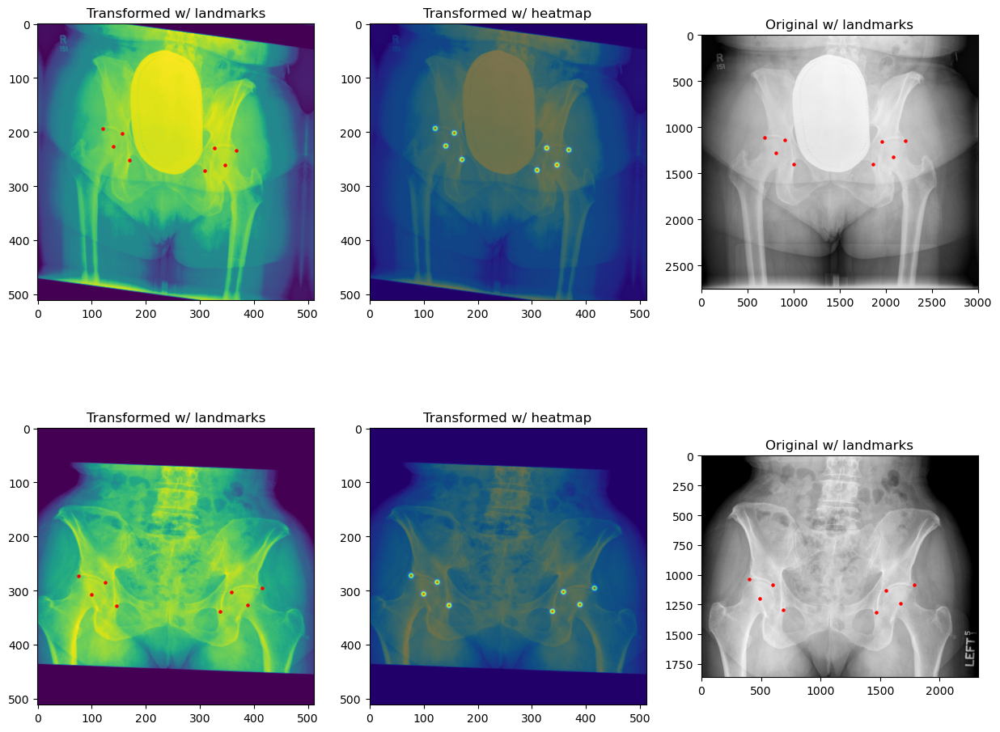
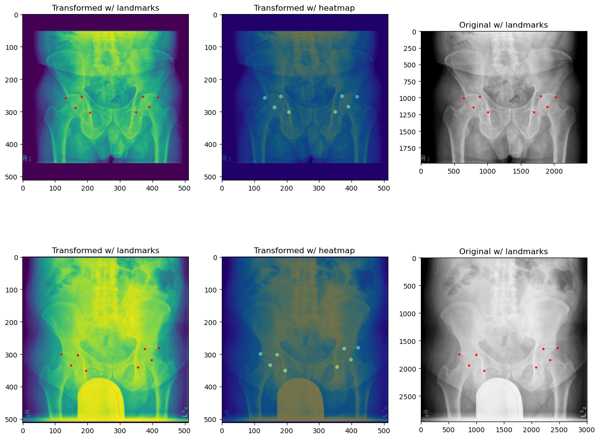
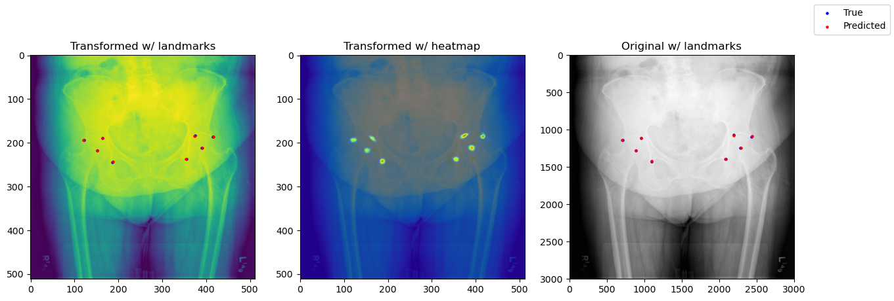
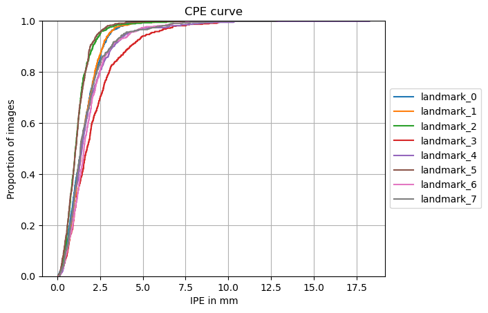

OAI pelvis X-ray Dataset#
We will go through the following steps:
Setup environment#
# !python -c "import landmarker" || pip install landmarker
import sys
import os
sys.path.append("../src/")
import landmarker
Setup imports and variables#
import numpy as np
import torch
from torch.utils.data import DataLoader
from monai.transforms import (Compose, RandAffined, RandGaussianNoised, RandStdShiftIntensityd,
RandScaleIntensityd, RandAdjustContrastd, RandHistogramShiftd,
ScaleIntensityd, Lambdad)
from tqdm.notebook import tqdm
device = 'cuda' if torch.cuda.is_available() else 'cpu'
Loading the dataset#
from landmarker.transforms.images import UseOnlyFirstChannel
fn_keys = ('image',)
spatial_transformd = [RandAffined(fn_keys, prob=1,
rotate_range=(-np.pi/12, np.pi/12),
translate_range=(-10, 10),
scale_range=(-0.1, 0.1),
shear_range=(-0.1, 0.1)
)]
train_transformd = Compose([
UseOnlyFirstChannel(('image', )),
RandGaussianNoised(('image', ), prob=0.2, mean=0, std=0.1), # Add gaussian noise
RandScaleIntensityd(('image', ), factors=0.25, prob=0.2), # Add random intensity scaling
RandAdjustContrastd(('image', ), prob=0.2, gamma=(0.5,4.5)), # Randomly adjust contrast
RandHistogramShiftd(('image', ), prob=0.2), # Randomly shift histogram
ScaleIntensityd(('image', )), # Scale intensity
] + spatial_transformd)
inference_transformd = Compose([
UseOnlyFirstChannel(('image', )),
ScaleIntensityd(('image', )),
])
from glob import glob
import pandas as pd
data_dir = "../../data/OAIPelvis/"
df_coord_info = pd.read_excel(data_dir+"Coordinates_information.xlsx")
df_info = pd.read_excel(data_dir+"original_information.xlsx")
df_info["new_image_file"] = df_info["image_file"].str.replace("s3://NDAR_Central_4/submission_13411/48m/", data_dir).str.replace(".tar.gz", "/001.dcm")
df_info["png_path"] = data_dir + "images/" + df_info["new_image_file"].str.split("/").apply(lambda x: x[-2]) + ".png"
df_info["image_name"] = df_info["new_image_file"].str.split("/").apply(lambda x: x[-2]) + "_1x1"
df_info = df_info.merge(df_coord_info, on="image_name")
image_paths = df_info["png_path"]
pixel_spacing = df_info[["image_resolution1", "image_resolution2"]].to_numpy()
landmark_cols = df_coord_info.drop(columns=["image_name"]).columns
landmarks = np.flip(df_info[landmark_cols].to_numpy().reshape(-1, 8, 2).astype(float)*4,-1)
list_idxs = np.arange(len(image_paths))
np.random.seed(1817)
np.random.shuffle(list_idxs)
from landmarker.data import LandmarkDataset
fold_size = 105
image_paths_folds = []
pixel_spacing_folds = []
landmarks_folds = []
ds_folds = []
for i in range(5):
if i == 4:
fold_idxs = list_idxs[i*fold_size:]
else:
fold_idxs = list_idxs[i*fold_size:(i+1)*fold_size]
image_paths_folds.append(image_paths[fold_idxs].to_list())
pixel_spacing_folds.append(pixel_spacing[fold_idxs])
landmarks_folds.append(landmarks[fold_idxs])
ds_folds.append(
LandmarkDataset(
imgs = image_paths_folds[i],
landmarks = landmarks_folds[i],
transform = inference_transformd,
dim_img = (512, 512),
pixel_spacing = pixel_spacing_folds[i],
store_imgs = True
)
)
Reading 105 images...
100%|██████████| 105/105 [00:43<00:00, 2.40it/s]
Resizing 105 images and landmarks...
100%|██████████| 105/105 [00:04<00:00, 26.09it/s]
Reading 105 images...
100%|██████████| 105/105 [00:38<00:00, 2.70it/s]
Resizing 105 images and landmarks...
100%|██████████| 105/105 [00:04<00:00, 21.40it/s]
Reading 105 images...
100%|██████████| 105/105 [00:39<00:00, 2.63it/s]
Resizing 105 images and landmarks...
100%|██████████| 105/105 [00:06<00:00, 15.83it/s]
Reading 105 images...
100%|██████████| 105/105 [00:38<00:00, 2.71it/s]
Resizing 105 images and landmarks...
100%|██████████| 105/105 [00:05<00:00, 19.63it/s]
Reading 104 images...
100%|██████████| 104/104 [00:36<00:00, 2.85it/s]
Resizing 104 images and landmarks...
100%|██████████| 104/104 [00:04<00:00, 21.35it/s]
Constructing a heatmap generator#
Note that with 2D landmarks the y coordinates are the first dimension, and the x coordinates are the second dimension.
from landmarker.heatmap.generator import GaussianHeatmapGenerator
heatmap_generators_folds = []
for _ in range(5):
heatmap_generators_folds.append(GaussianHeatmapGenerator(
nb_landmarks=8,
sigmas=3,
gamma=100,
heatmap_size=(512, 512),
learnable=True, # If True, the heatmap generator will be trainable
))
Inspecting the dataset#
from landmarker.visualize import inspection_plot
ds_folds[0].transform = train_transformd
# Plot the first 3 images from the training set
inspection_plot(ds_folds[0], range(2), heatmap_generator=heatmap_generators_folds[0])
ds_folds[0].transform = inference_transformd

from landmarker.visualize import inspection_plot
# Plot the first 3 images from the training set
inspection_plot(ds_folds[2], range(2), heatmap_generator=heatmap_generators_folds[2])

Training and initializing the SpatialConfiguration model#
Initializing the model, optimizer and loss function#
from landmarker.models.spatial_configuration_net import OriginalSpatialConfigurationNet
from landmarker.losses import GaussianHeatmapL2Loss
criterion = GaussianHeatmapL2Loss(
alpha=5
)
model_folds = []
lr = 1e-6
batch_size = 1
epochs = 200
for _ in range(5):
model_folds.append(OriginalSpatialConfigurationNet(in_channels=1, out_channels=8).to(device))
Training the model#
from landmarker.heatmap.decoder import heatmap_to_coord
from landmarker.metrics import point_error
def train_epoch(model, heatmap_generator, train_loader, criterion, optimizer, device):
running_loss = 0
model.train()
for i, batch in enumerate(tqdm(train_loader)):
images = batch["image"].to(device)
heatmaps = heatmap_generator(batch["landmark"]).to(device)
optimizer.zero_grad()
outputs = model(images)
loss = criterion(outputs, heatmap_generator.sigmas, heatmaps)
loss.backward()
torch.nn.utils.clip_grad_norm_(model.parameters(), 10000.0)
optimizer.step()
running_loss += loss.item()
return running_loss / len(train_loader)
def val_epoch(model, heatmap_generator, val_loader, criterion, device, method="local_soft_argmax"):
eval_loss = 0
eval_mpe = 0
model.eval()
with torch.no_grad():
for i, batch in enumerate(tqdm(val_loader)):
images = batch["image"].to(device)
landmarks = batch["landmark"].to(device)
outputs = model(images)
dim_orig = batch["dim_original"].to(device)
pixel_spacing = batch["spacing"].to(device)
padding = batch["padding"].to(device)
heatmaps = heatmap_generator(batch["landmark"]).to(device)
loss = criterion(outputs, heatmap_generator.sigmas, heatmaps)
pred_landmarks = heatmap_to_coord(outputs, method=method)
eval_loss += loss.item()
eval_mpe += point_error(landmarks, pred_landmarks, images.shape[-2:], dim_orig,
pixel_spacing, padding, reduction="mean")
return eval_loss / len(val_loader), eval_mpe / len(val_loader)
def train(model, heatmap_generator, train_loader, val_loader, criterion, optimizer, device, epochs=1000):
for epoch in tqdm(range(epochs)):
train_loss = train_epoch(model, heatmap_generator, train_loader, criterion, optimizer, device)
val_loss, val_mpe = val_epoch(model, heatmap_generator, val_loader, criterion, device)
print(f"Epoch {epoch+1}/{epochs} - Train loss: {train_loss:.4f} - Val loss: {val_loss:.4f} - Val mpe: {val_mpe:.4f}")
lr_scheduler.step(val_loss)
for i, model in enumerate(model_folds):
print("="*50)
print(f"Fitting model with hold-out fold {i}")
print("="*50)
ds_val = ds_folds[i]
ds_val.transform = inference_transformd
ds_train = []
for i_train in range(5):
if i == i_train:
continue
ds_folds[i_train].transform = train_transformd
ds_train.append(ds_folds[i_train])
ds_train = torch.utils.data.ConcatDataset(ds_train)
train_loader = DataLoader(ds_train, batch_size=batch_size, shuffle=True, num_workers=4)
val_loader = DataLoader(ds_val, batch_size=batch_size, shuffle=False, num_workers=4)
optimizer = torch.optim.SGD([
{'params': model.parameters(), "weight_decay":1e-3},
{'params': heatmap_generators_folds[i].sigmas},
{'params': heatmap_generators_folds[i].rotation}]
, lr=lr, momentum=0.99, nesterov=True)
lr_scheduler = torch.optim.lr_scheduler.ReduceLROnPlateau(optimizer, mode='min', factor=0.5,
patience=10, verbose=True, cooldown=10)
train(model, heatmap_generators_folds[i], train_loader, val_loader, criterion, optimizer, device,
epochs=epochs)
Evaluating the model#
for i, model in enumerate(model_folds):
model.load_state_dict(torch.load(f"oai-pelvis-scn-fold{i}.pt", weights_only=True))
heatmap_generators_folds[i].load_state_dict(torch.load(f"oai-pelvis-scn-heatmap-generator-fold{i}.pt", weights_only=True))
pred_landmarks_folds = []
true_landmarks_folds = []
dim_origs_folds = []
pixel_spacings_folds = []
paddings_folds = []
test_mpe = 0
for i, model in enumerate(model_folds):
pred_landmarks = []
true_landmarks = []
dim_origs = []
pixel_spacings = []
paddings = []
model.eval()
ds_test = ds_folds[i]
ds_test.transform = inference_transformd
test_loader = DataLoader(ds_test, batch_size=batch_size, shuffle=False, num_workers=4)
with torch.no_grad():
for batch_idx, batch in enumerate(tqdm(test_loader)):
images = batch["image"].to(device)
outputs = model(images)
dim_orig = batch["dim_original"].to(device)
pixel_spacing = batch["spacing"].to(device)
padding = batch["padding"].to(device)
landmarks = batch["landmark"].to(device)
pred_landmark = heatmap_to_coord(outputs, method="local_soft_argmax")
test_mpe += point_error(landmarks, pred_landmark, images.shape[-2:], dim_orig,
pixel_spacing, padding, reduction="mean")
pred_landmarks.append(pred_landmark.cpu())
true_landmarks.append(landmarks.cpu())
dim_origs.append(dim_orig.cpu())
pixel_spacings.append(pixel_spacing.cpu())
paddings.append(padding.cpu())
pred_landmarks = torch.cat(pred_landmarks)
true_landmarks = torch.cat(true_landmarks)
dim_origs = torch.cat(dim_origs)
pixel_spacings = torch.cat(pixel_spacings)
paddings = torch.cat(paddings)
pred_landmarks_folds.append(pred_landmarks)
true_landmarks_folds.append(true_landmarks)
dim_origs_folds.append(dim_origs)
pixel_spacings_folds.append(pixel_spacings)
paddings_folds.append(paddings)
pred_landmarks = torch.cat(pred_landmarks_folds)
true_landmarks = torch.cat(true_landmarks_folds)
dim_origs = torch.cat(dim_origs_folds)
pixel_spacings = torch.cat(pixel_spacings_folds)
paddings = torch.cat(paddings_folds)
test_mpe /= len(df_coord_info)
print(f"Test Mean PE: {test_mpe:.4f}")
Test Mean PE: 1.6135
from landmarker.metrics import sdr
sdr_test = sdr([1.0, 2.0, 3.0, 4.0], true_landmarks=true_landmarks, pred_landmarks=pred_landmarks,
dim=(512, 512), dim_orig=dim_origs.int(), pixel_spacing=pixel_spacings, padding=paddings)
for key in sdr_test:
print(f"SDR for {key}mm: {sdr_test[key]:.4f}")
SDR for 1.0mm: 33.2538
SDR for 2.0mm: 74.3798
SDR for 3.0mm: 90.9590
SDR for 4.0mm: 95.8492
from landmarker.visualize.utils import prediction_inspect_plot
model_folds[0].eval()
model_folds[0].to("cpu")
prediction_inspect_plot(ds_folds[0], model_folds[0], 5, save_path="pred_inspect_plot_pelvis.pdf")

from landmarker.visualize import detection_report
detection_report(true_landmarks, pred_landmarks, dim=(512, 512), dim_orig=dim_origs.int(),
pixel_spacing=pixel_spacings, padding=paddings, class_names=ds_folds[0].class_names,
radius=[1.0, 2.0, 3.0, 4.0], digits=2)
Detection report:
1# Point-to-point error (PE) statistics:
======================================================================
Class Mean Median Std Min Max
----------------------------------------------------------------------
landmark_0 1.51 1.39 0.88 0.04 4.72
landmark_1 1.55 1.42 0.89 0.06 7.26
landmark_2 1.20 1.06 0.83 0.04 7.61
landmark_3 2.15 1.73 1.69 0.06 12.86
landmark_4 1.80 1.43 1.57 0.05 18.28
landmark_5 1.17 1.07 0.75 0.04 8.24
landmark_6 1.82 1.56 1.27 0.09 10.12
landmark_7 1.70 1.35 1.36 0.12 12.76
======================================================================
2# Success detection rate (SDR):
================================================================================
Class SDR (PE≤1.0mm) SDR (PE≤2.0mm) SDR (PE≤3.0mm) SDR (PE≤4.0mm)
--------------------------------------------------------------------------------
landmark_0 33.36 73.45 94.12 98.73
landmark_1 29.45 72.93 94.89 98.30
landmark_2 44.10 88.81 97.32 98.69
landmark_3 24.56 58.60 79.73 88.30
landmark_4 30.74 70.60 86.68 94.68
landmark_5 45.15 91.00 98.10 99.31
landmark_6 24.90 67.03 88.74 93.52
landmark_7 31.66 71.90 88.49 95.17
================================================================================
from landmarker.visualize import plot_cpe
plot_cpe(true_landmarks, pred_landmarks, dim=(512, 512), dim_orig=dim_origs.int(),
pixel_spacing=pixel_spacings, padding=paddings, class_names=ds_folds[0].class_names,
group=False, title="CPE curve", save_path=None,
stat='proportion', unit='mm', kind='ecdf')
